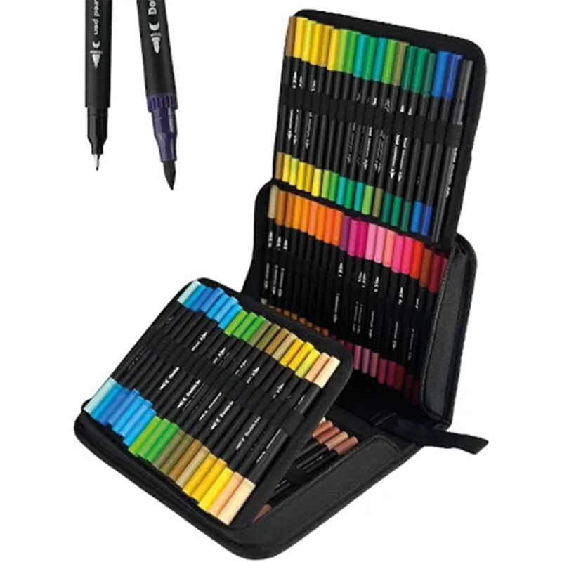
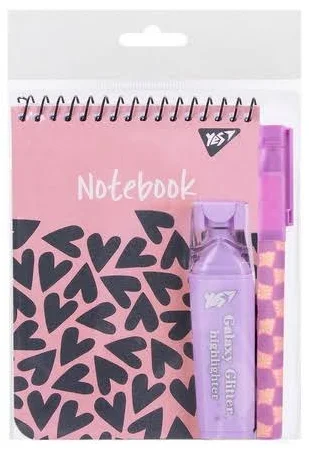

Головна
Цей сайт створено для ознайомлення з асортиментом канцелярських товарів та зручного доступу до актуальної інформації про знижки. Ми пропонуємо широкий вибір продукції для офісу, школи та творчості: ручки, блокноти, папір, тексти, маркери, органайзери та багато іншого. Кожен товар супроводжується детальним описом та зображенням, щоб ви могли легко знайти саме те, що потрібно. Регулярні оновлення дозволяють вам першими дізнаватися про новинки та вигідні пропозиції. У нас діють тематичні акції за днями тижня, сезонні розпродажі та персональні знижки для постійних клієнтів. Завдяки зручному інтерфейсу ви зможете швидко переглядати товари, шукати потрібне за категоріями та оформлювати замовлення. Наша мета — зробити процес вибору максимально приємним та ефективним для кожного користувача.
Асортимент продукції
Маркер оранжевий
Ціна: 20 грн.
Опис: Яскравий помаранчевий маркер для виділення тексту.
До/після обробки у Photoshop:
Маркер рожевий
Ціна: 20 грн.
Опис: Пастельний рожевий маркер для офісу й навчання.
До/після обробки у Photoshop:
Набір маркерів
Ціна: 229 грн.
Опис: Комплект з декількох кольорових маркерів для роботи та творчості.
До/після обробки у Photoshop:
Набір
Ціна: 229 грн.
Опис: Все необхідне для організації робочого місця.
До/після обробки у Photoshop:
Набір маркерів
Ціна: 229 грн.
Опис: Універсальний набір маркерів з різними відтінками.
До/після обробки у Photoshop:
Степлер
Ціна: 85 грн.
Опис: Металевий степлер для скріплення документів.
До/після обробки у Photoshop:
Календар знижок
Завантажити календар знижок:
PDF | INDDРозробник
Ясінський Дмитро, група 17, спеціальність: ОІПЗ.
Email: 17_23_yasinskyi@vmvpu.vn.ua